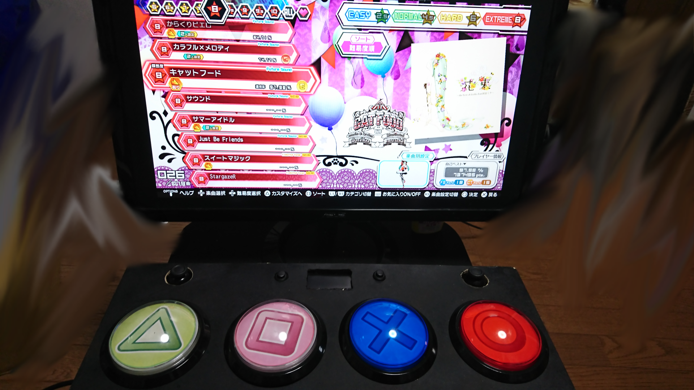
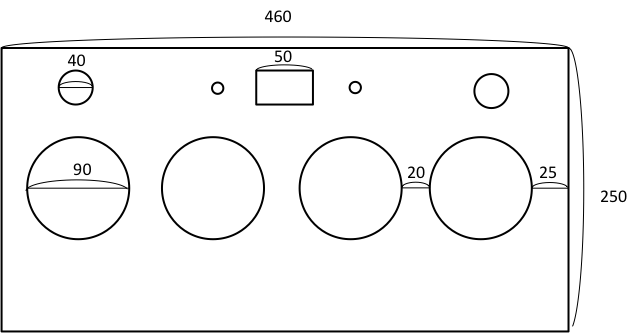
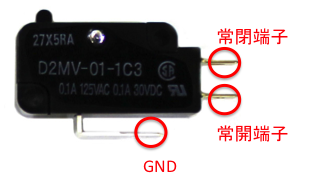
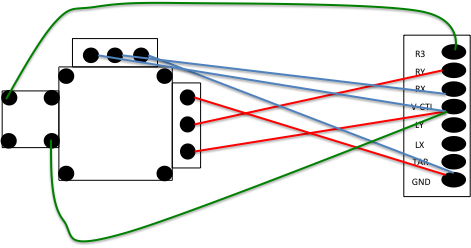

簡易版DIVA
FTDX用自作コントローラー
先日、初音ミクProjectDIVA FutureTone ArcadeをPS4にほぼ完全移植した初音ミク ProjectDIVA FutureTone DXが発売されました。このFTDX、発売後にアーケード版に追加された譜面も追って無料配信されるなど実はかなりアツいソフトです。コナステとかいうケチ臭いアプリとは大違い。ですが、これには専用コントローラーが（実質）ないという大きな罠があります。残念ながら、「Team
SEGA feat. HATSUNE MIKU Projectの雑用担当」中の人（1号）氏によってアケコンを発売しないことが明言されています。（https://twitter.com/nakanohito_1go/status/745860003203002369）
しかし一応、ソフトが出た直後にHORIからライセンス付きの専コンが出ました、
初音ミク Project DIVA Future Tone DX 専用ミニコントローラー
for PlayStation®4
https://hori.jp/products/p4/FTDX_minicon/
が、すでに製造を中止しており現在プレミアが付いています。定価\14,000のところなんと\56,000！（1月時点）そんな金を出してまで買うような代物ではありません。見ての通り小さなボタンが8個ついているし、アナログスティックは下側に生えていてACと操作性がまるで違っています。ないなら作ろう！ということで簡単にですが作りました。

↑(勘違いをしていてボタンに色が付いてしまった)
スライダーの代わりにコントローラーからアナログスティックを奪って上側に生やしています。また、中央上側にはタッチパネルも用意。作るときに色々調べると、PSPとかPS3向けのものは割と引っかかるんですがFTDX用の自作アケコンについての文献が意外と少ないというのもあってちょっと書いてみるかという気になっています。
余談ですが、制作過程でDUALSHOCK4を２つ壊しました。DS4で作れれば無線だしイヤホン生やせるしで機能性がかなり増すんですが半田付けの難易度が高すぎて断念。というわけで、今回は基盤が親切で半田付け難易度が低いHORIパッドFPS+を使用します。また、HORIパッドFPS+にはPS3/PS4切り替え機能があるのでPS3のドリーミーシアターでも使えます。（同時押しの仕様上互換性を持たせるなら少し工夫が必要ですが）
※この記事によって発生した損害等、一切責任を持ちませんのであくまで自己責任でお願いします。
◎準備
まずは、材料と装備を揃えておきましょう。買い物は一度で済ませたほうが楽です。
器具類
・半田ごて
・木工用のこぎり
・木工用糸鋸
・キリ
・ニッパー
・ドライバー（+,—）
・カッター
これらは大体100均で揃うので持ってないなら買いましょう。（糸鋸は見たことがないのでホームセンターで）
消耗品・材料
・HORIパッドFPS+
PS3/PS4用のコントローラーです。バラして基盤を拝借します。
・木材用紙やすり
・半田吸い取り線
・半田
・導線
・プッシュボタン 任意数（後述）
・φ100丸ボタン ４つ
・マイクロスイッチ ４つ
丸ボタンとマイクロスイッチはDAOで揃えるのが安上がりです。
・ファストン端子
・接着剤
・薄型磁石 二つ以上
・磁石補助板 二つ
・MDF材(厚さ9mm程度と1,2mm程度のものを十分用意)
・ゴム足 ４つ
・ネジ類（必要に応じて）
・ラミネート材
・DS4の交換用アナログスティック
これは任意です。コントローラーについているアナログスティックを取り外すのに合計で20の半田を取り除く必要があり面倒なので買っておくと楽。
材料は以上です。これらを全部そろえると\12,000〜\15,000程になると思います。ホームセンターで大体揃いますが、なかったらア○ゾンとかも利用しましょう。配線直付けの方針なのでユニバーサル基板などは用意しませんでした。
FTDXで使用するボタンは以下の通りです。
|
L1/R1 |
カテゴリ切り替え |
|
タッチパネル押し込み |
楽曲お気に入り登録/プレイ開始位置変更（プラクティスモード） |
|
R3 |
モジュール設定変更（楽曲別と共通の切り替えのこと、なくても着せ替えは可能）/リスタート(プラクティスモード) |
|
L3 |
プレイ開始位置後退（プラクティスモード） |
重要だと思われるキーは赤字太字にしています。また、φ100丸ボタンで用意する○×⬜︎△の機能は省略。プッシュボタンはこの中から必要だと思うキーの数＋２つ（OPTIONとPS）を用意します。
◎制作

筐体になる箱を作ります。寸法は460*250*80以上にします。このサイズで結構ギリギリです。基盤が収まらなくて困ったので、大きめに作るのも良いと思います。底面は薄い木材にしてゴム足を取り付けておきます。また、これは接着せず磁石で固定する形にします。
天板にボタンをはめる穴とアナログスティックを生やす穴（、任意でタッチパネルを生やす穴）を空け、側面と接着してください。これでガワは完成です。
丸ボタンに○×⬜︎△ステッカーを貼り付けて加工していきます。自分で○×⬜︎△の画像を作成しても良いですが、先人たちが公開しているものがあるので活用させてもらいましょう。
みーにあ - [気まぐれ更新なサイト] 初音ミク Project DIVA
Arcade風コントローラー（PD 2nd対応）
http://meenia.jp/diy/controller/miku-pd/pd-02
丸ボタンの透明なドームを外すときはマイナスドライバーなどを差し込んで割と力づくでやる必要があります。
次にHORIパッドFPS+を分解して基盤を取り出します。メイン基盤とUSBケーブル以外は取り外してOKです。すべて取り外したら別基盤についているアナログスティックを再利用するために外します。半田を全て取り除いてからマイナスドライバーなどを利用し引っこ抜くのですが、結構骨が折れます。足を切っちゃうという手もありますが、切りすぎて足がなくなると後が面倒なのであまりおすすめはしません。もちろん、交換用のアナログスティックを用意しているならばわざわざはずす必要はありません。
さてここからが本番の配線です。
HORIパッドFPS+の基盤についてはこちらのページが参考になります。
魔王の引き出し PS4アケコン乗っ取り用にHoriパッド
FPSプラスの分解
http://maodasi.ldblog.jp/archives/46607411.html
GND端子には複数の配線を繋げる必要がありますので、一本にまとめるなど工夫が必要です。自分は空中で配線を一本にまとめる力技で解決させましたが、まあ見た目的にも綺麗なものではないのでスマートにやりたいなら基盤から引き出した配線を一度ユニバーサル基盤などにまとめると良いと思います。
最後にアナログスティックの乗っ取りを行いますが、アナログスティックの仕様についてはこちらのページが参考になります。
ファミコンと心中するの？ デュアルショック4のアナログスティックを乗っ取る(1)：分解〜回路図〜試験
https://ameblo.jp/bit287/entry-12426938822.html
アナログスティックの半田ポイントは全て右下にあります。こちらの配線引き出しについてはアナログスティックが乗っていた基盤を取り外していればそれが繋がっていた部分も当然それぞれ導通箇所となっているのでそちらも合わせて利用しましょう。どこに何をつなげれば良いかは基盤に書いてある通りですが、二つほど補足しておくと、V-CTLの端子が上のページにおける+3.2V端子と対応します。また、TARとある端子は使用しません。スティック押し込みボタンを利用する場合は上のページにもある通りR3/L3ボタン端子と+3.2V端子の短絡（GNDではない！）が必要なので注意。対角線にある端子から配線を引き出し、それぞれR3/L3ボタン端子とV-CTL端子に繋げます。もちろん、R1/L1などR3/L3以外のキーに利用することも可能です。その場合はR3/L3ボタン端子と+3.2V端子を該当のボタン端子と対応するGND端子と接続させてください。

↑配線イメージ
ここまで終われば完成です。簡単ですね。このDIVAコンにはスライダーなどというものはありません（スライダーまで実装してしまう猛者がいるみたいですね…）し、ボタンも光りませんがその分簡単に作ることができます。